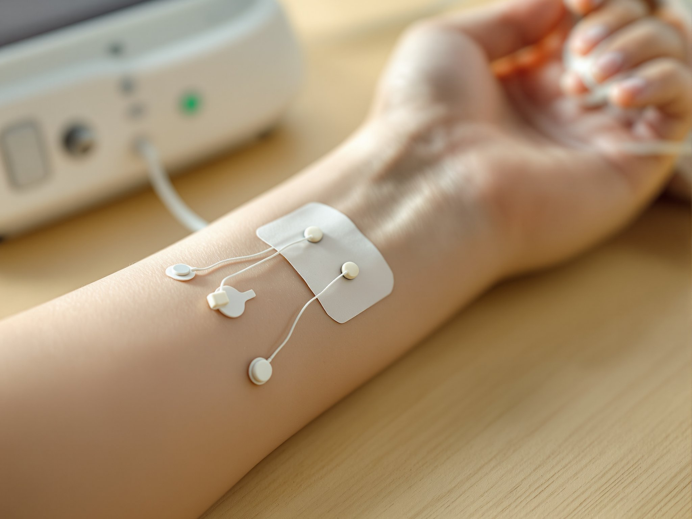

01 / Condition overview, San Jose
Neck and shoulder pain treatment in San Jose
Neck and shoulder pain is common, which is exactly why it gets treated blind. We assess yours first, including nerve testing on site when the pain travels, so what we treat is what you actually have. If your pain began after a car accident, this page applies to you too.
02 / What it is and what causes it
What neck and shoulder pain is, and what causes it
Most people describe one of three things. A deep ache across the top of the shoulders. A sharp catch on one side when they turn. Or a reduced range of motion, meaning the head no longer turns or tilts as far as it used to before something stops it.
The usual causes
The usual causes are a collision, where the head is thrown forward and back and the soft tissue of the neck is strained; hours held in one position at a desk or a wheel; sleeping awkwardly; and an older injury that was never fully rehabilitated.
Muscular or nerve
Sometimes the pain is muscular. Sometimes a nerve in the neck is irritated and the shoulder is only where you feel it. Those are two different problems, and treating one as the other is why some neck pain never settles.
03 / How we assess it
How we assess it
Your first visit starts with your history and a physical exam. We measure your range of motion in each direction and record where it stops and what stops it, so there is a number to compare against later instead of a memory.
If your symptoms radiate, meaning pain, numbness, tingling or weakness travels into the shoulder, arm or hand, we test the nerve directly. Nerve conduction velocity testing measures how fast a signal travels along a nerve, which shows whether a nerve is involved or whether the problem is muscular. We run it here, on site, in the same visit. In a capability sweep of 53 pages across six competing San Jose properties in August 2026, none advertised nerve conduction or EMG testing.
On-site diagnostics
Nerve conduction, on site
04 / How it is treated
How it is treated
Treatment is non-surgical and drug-free. What it consists of depends on what the exam and the testing found, because muscular neck pain and nerve-involved neck pain do not respond to the same plan.
A course of care generally combines hands-on chiropractic care to restore movement at the joints of the neck with physical medicine, meaning therapeutic modalities applied to the injured soft tissue, plus home exercise to hold the movement you get back.
We explain any risks before care begins. We tell you at the start roughly how long we expect the plan to run, and we re-measure as we go rather than asking how you feel and leaving it there. Individual results vary.
05 / When to seek care sooner
When to seek care sooner
Emergency signs
Some symptoms belong in an emergency room, not here. Call 911 or go to an emergency department if you have severe neck pain after a significant trauma, weakness or numbness in both arms, loss of bladder or bowel control, a sudden severe headache, confusion, slurred speech, or a change in your vision.

Bring your paperwork
An emergency room does a different job than we do. It rules out the injuries that can kill you and it discharges you with pain medication. After a serious collision that is the right first call. It is not set up to test for the soft-tissue and nerve damage that turns into a long-running problem weeks later, which is the part we pick up.
If you have already been seen, bring your discharge paperwork and any imaging with you.